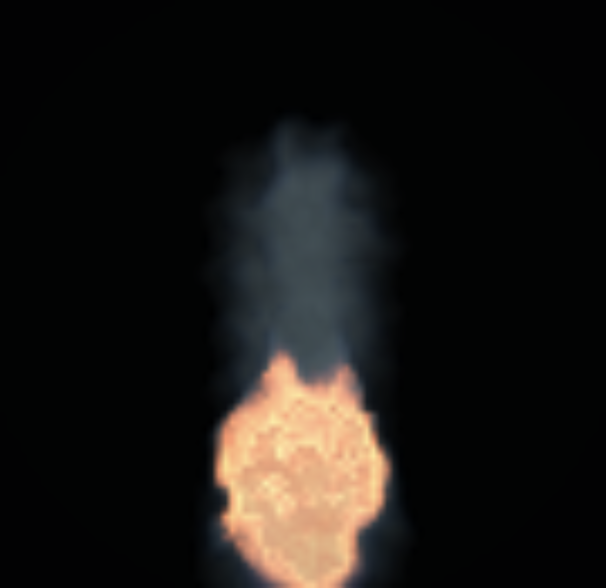
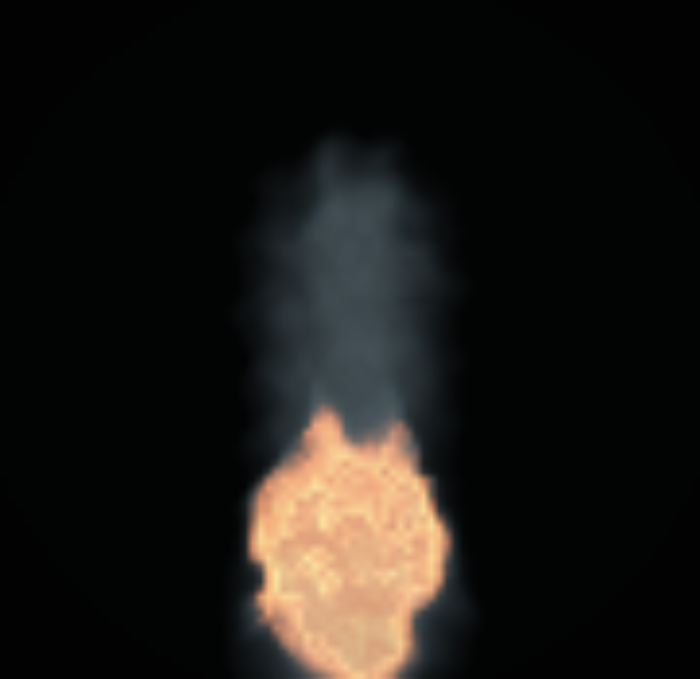
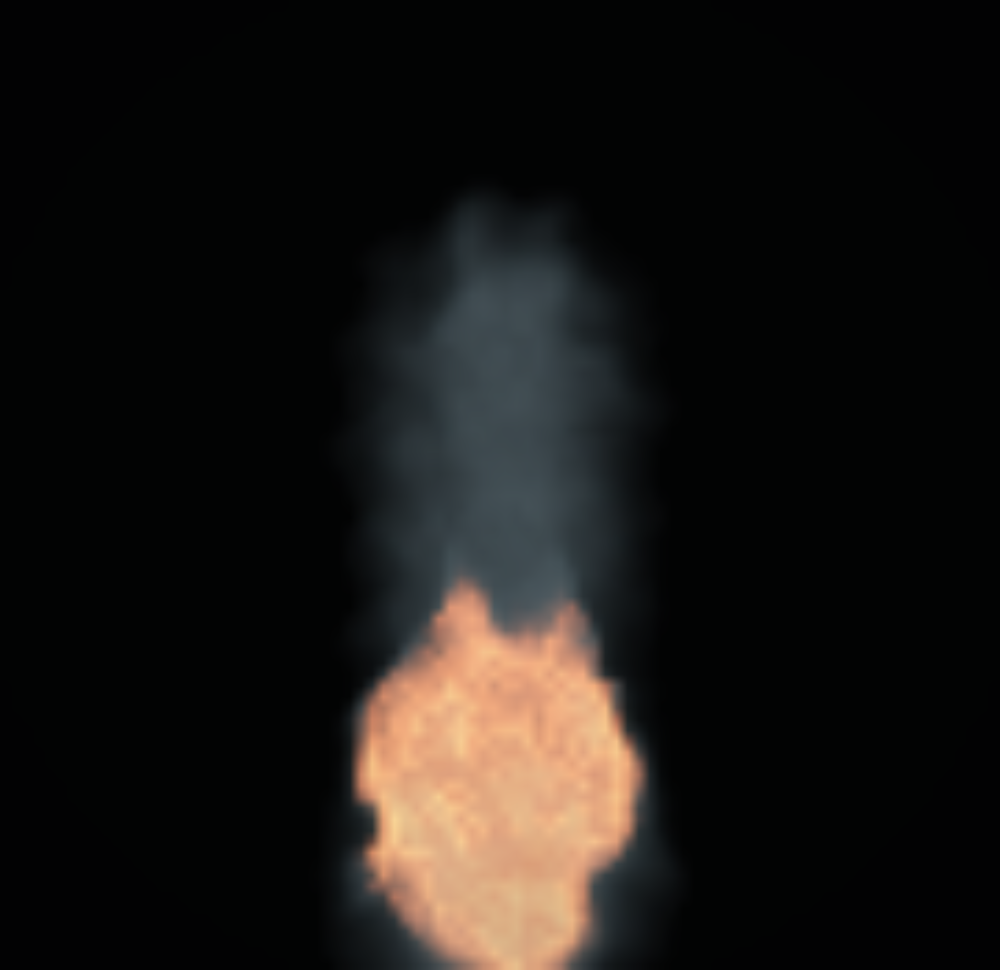
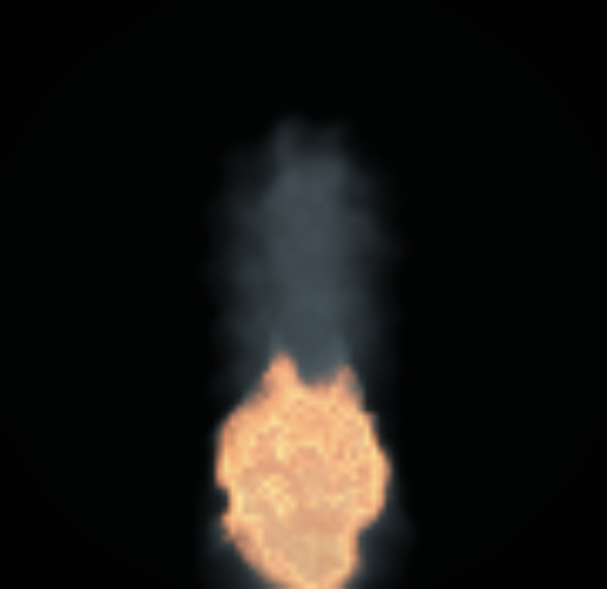
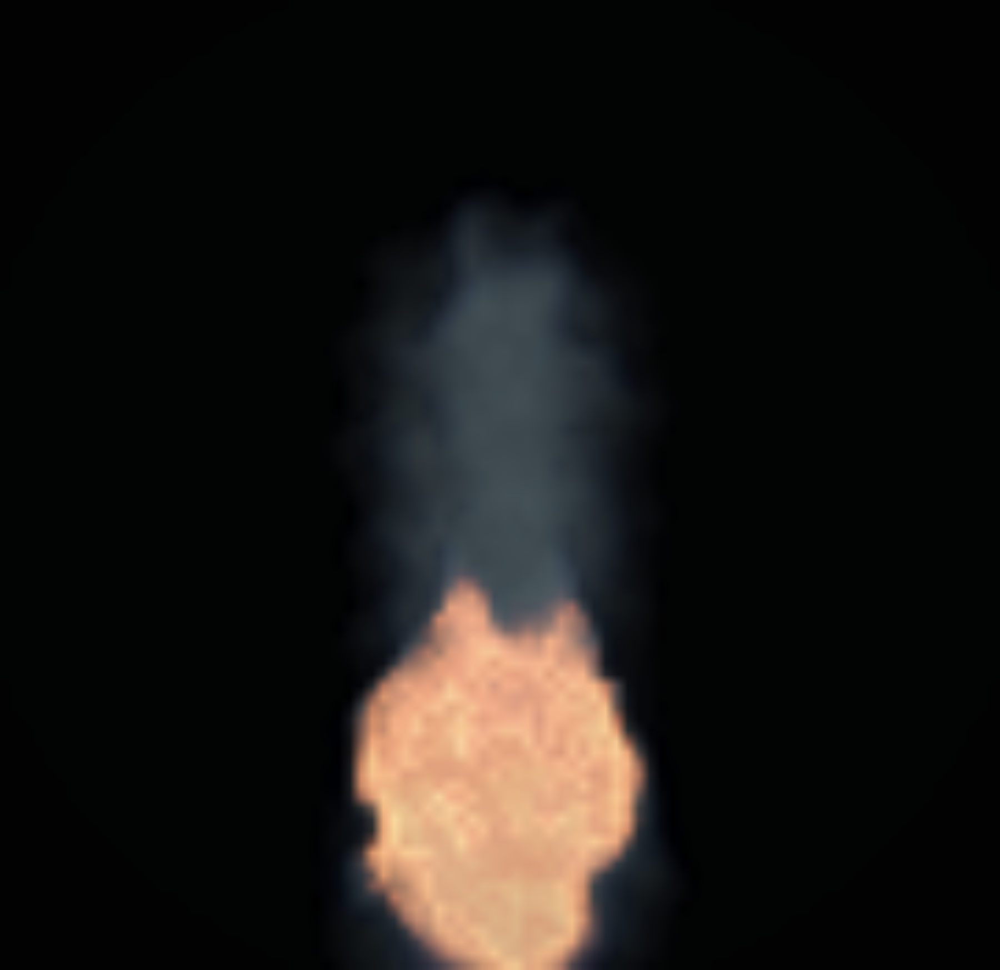
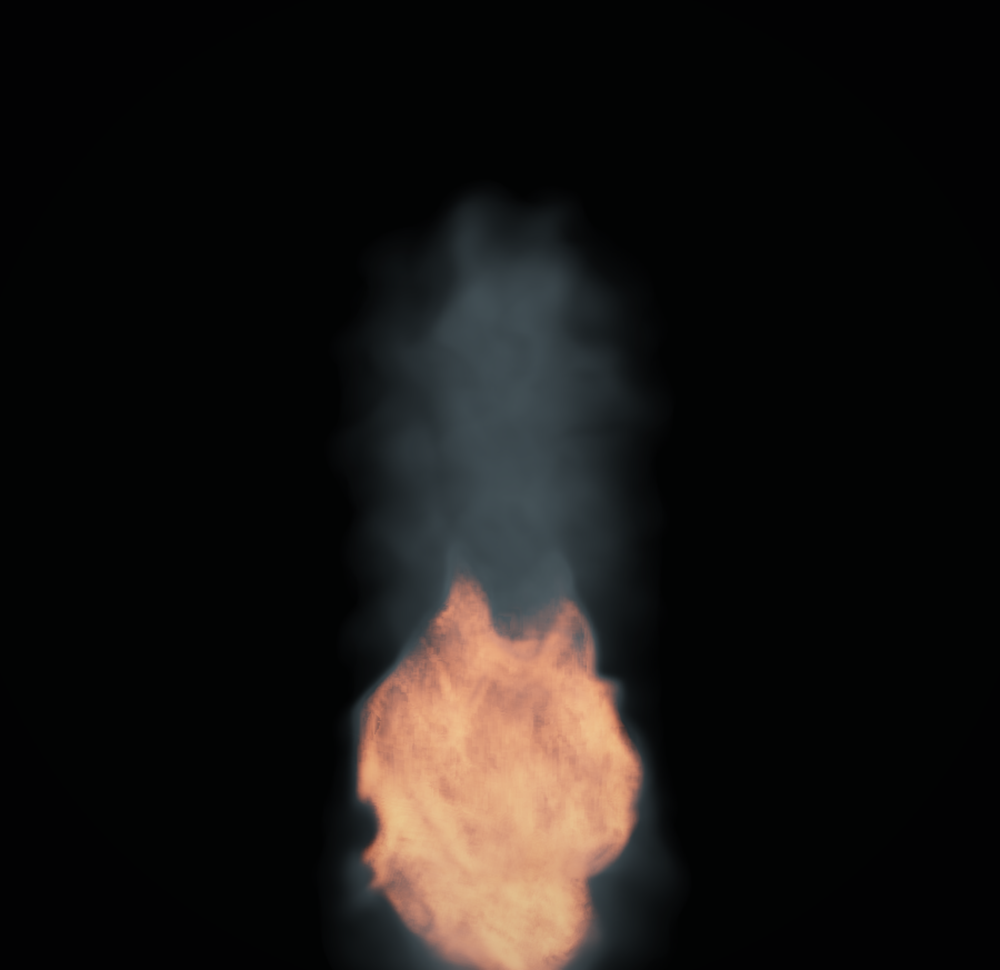

Authority: cdp-canvas-clip-after-renderFrozenScaleToCanvas-with-residual-load-check-v0. Sim/frame integrity: {"sameCanvasFrameCount":false,"sameCanvasSimStepCount":true,"frameCounts":[68,79,80,82,83,95,96,107,108,124],"simStepCounts":[20],"allResidualLoadsExplicit":true}
off/refartifacts/residual-latest-fire-0708/aggressive-rs010-sweep/existing-latest-main-direct/browser-rs010-frontbite-direct.json
artifacts/residual-latest-fire-0708/aggressive-rs010-sweep/existing-latest-main-direct/browser-rs010-frontbite-direct.jsonartifacts/residual-latest-fire-0708/aggressive-rs010-sweep/existing-latest-main-direct/browser-rs010-highlimit-direct.json
artifacts/residual-latest-fire-0708/aggressive-rs010-sweep/existing-latest-main-direct/browser-rs010-highlimit-direct.json
artifacts/residual-latest-fire-0708/aggressive-rs010-sweep/existing-latest-main-direct/browser-rs010-highlimit-smoke-energy-2p0.json
artifacts/residual-latest-fire-0708/aggressive-rs010-sweep/existing-latest-main-direct/browser-rs010-highlimit-smoke-energy-2p0.jsonartifacts/residual-latest-fire-0708/aggressive-rs010-sweep/existing-latest-main-direct/browser-rs010-smoke-structure-routed.json
artifacts/residual-latest-fire-0708/aggressive-rs010-sweep/existing-latest-main-direct/browser-rs010-smoke-structure-routed.json
off/ref